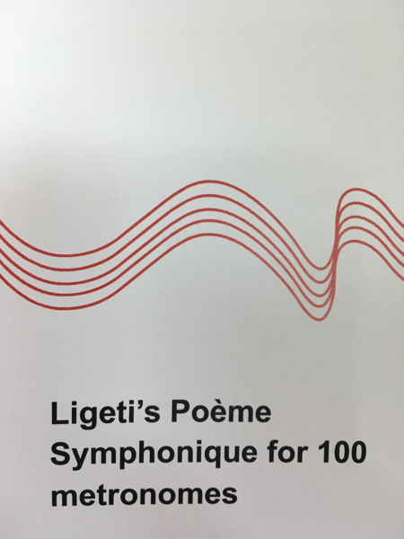
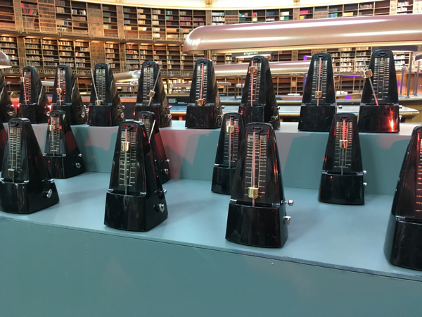

Recently, I was lucky enough to attend a performance of Ligeti's Poème Symphonique for 100 metronomes, in the Reading Room at the British Museum. The Reading Room itself is an interesting space- it's an ornate rotunda inside the Great Court of the museum, it is usually closed to the public, and it has very live acoustics.

Although the Wikipedia article for this composition says that ten performers and a conductor are stipulated by the score, the performance I attended featured two performers working without a conductor. The piece was briefly announced and then the performers set to work starting the metronomes; the winding of the metronomes was not featured in this particular performance.
The program notes given to us are worth a read, so I've reproduced them here:
Ligeti went through several swerves in his career, perhaps none more surprising than his participation in 1961-2 in Fluxus, a movement that spread from New York to western Europe with the aim of removing art's mystique by misusing its totems. Among Ligeti's contributions was this 'symphonic poem' for a hundred metronomes, all to be set running simultaneously at different tempos by a number of human operators.
It was, of course, a joke. But like all good jokes, it turned out to say something about life - if by doing so, in this case, through machines. At first, with a hundred ticking instruments proceeding at once, the noise is constant. As metronome after metronome falls slient, though, rhythmic patterns begin to emerge, from how different streams of pulses interact.
These patterns will change and become simpler as time goes on. And eventually there will be a lone survivor.
Ligeti was a survivor: a Jew who had come through World War II, a musician who had kept his imagination unbounded through years in a Hungary where culture was under state control. he was not, now, about to join a group with fixed ideas - even one with fixed open ideas. The Poème symphonique, whose instructions he drew up in November 1962, was his last Fluxus piece. By the time of the first performance, ten months later, he was at work on his Requiem, producing those mesmerizing clouds of massed voices and instruments that Stanley Kubrick took over for 2001.
Even so, the crazy machinery of this Poème symphonique was to reappear again and again in Ligeti's music. As it turned out, the piece was not a practical joke at all but a fully fledged Ligeti composition.
Perhaps the joke now is that anyone producing a performance has to find a hundred examples of a period instrument: the clockwork metronome.
Though most people don't say that they go to classical music concerts to look at the musicians, I think the visual element of a concert is important, and that was true for this one as well. The metronomes themselves were mostly black and silver, which made them look a little like tiny symphony musicians wearing bow ties, and once they started, waving silver arms. It was hard not to anthropomorphize them, and the audience treated the event like a concert with live musicians, remaining silent the whole time, and applauding at the end.

It's worth noting that two of the metronomes had translucent electric blue cases, and one of those two struck a bell instead of ticking. It took me some minutes to figure out which one it was from my seat in the audience, and after the performance concluded, I went to the stage to confirm my suspicions about who the bell-ringer was.
The first few minutes of the piece sounded like a herd of very small horses, a wash of sound helped along by the acoustics of the room. I couldn't pick out individual metronomes until there were about fifteen of them left, and at this point the sound was more like popcorn in an air popper. I started thinking of pairs of them as "friends", because they were next to each other and set to a similar tempo. Sometimes they would wave at each other, pendulums nearly touching, and other times, they would be almost-but-not-quite synchronized.
When a metronome stopped, it was sudden and surprising - these are nicely made metronomes, so they didn't gradually slow down and then stop. Instead, there was a last tock with no sign of instability, and then a slow waggle of the pendulum to rest. I had started watching individual metronomes when there were around seven of them left, and sometimes I would look for one that I had cared about for some reason, only to find that it had already stopped. It was the small-scale version of finding out that an acquaintance you liked had moved away a few months ago.
The slowest metronomes seemed to last the longest. The performance had been billed at 15 minutes, but it actually went on for 45, and I can't decide if that was a hilarious prank on the audience or some bonus meditation time.